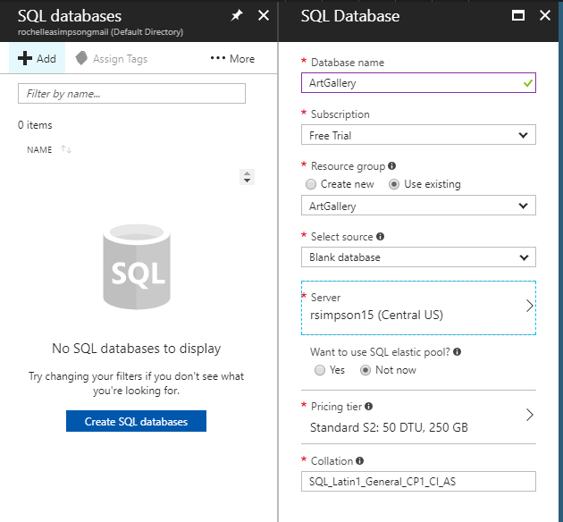

A deceptively simple project, we are tasked only with getting both our site and its correlating database up on Azure. At first I begin by following in the instructor's footsteps as he showed in class.
It begins with needing to acquire an account with Azure. I already had a Microsoft account of my own so I used that and got myself a free account.
You have to agree to a lot of validation and verification processes too.
Next I created my SQL Server for use in the project.
Then you generate a new database to connect to the one you have online.
Next you create the Web Application to upload to for your project. While doing this you connect it to the Rescource Group you generated along with the early SQL Server process.
To allow access between Azure and the hot IP, we then have to create a Firewall Rule that passes our IP to Azure.
Then we give it a connection string, using the name of our DB Context class in the program.
Then we publish and....
We get really comfortable with THIS screen for the next couple of hours. Oh yes folks, this will haunt my nightmares - this daibolical little screen of useless information.
After what felt like the better part of my nerves were worn away by fighting this thing, redoing and reloading and constantly wondering why the Azure Gods hated me - that was when I came across a lighthouse in my dark ocean.
Behold the Documentation Tutorial!Following this thing over and over a few more times allowed me to finally get the website up and running! In particular, a word to the wise and exhausted: There is a thiny italic blue "refresh" button over where it lets yo selecct database connections on Azure - USE IT!
Site is HERE